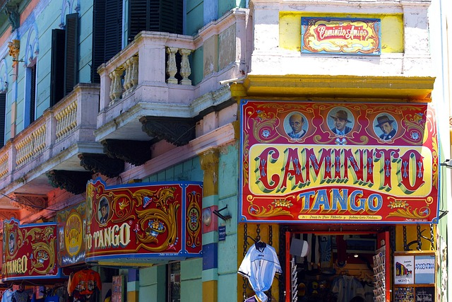

La Pedrera: Klenot modernismu v srdci Barcelony
V samém srdci barcelonské čtvrti Eixample se tyčí jedna z nejikoničtějších staveb katalánské metropole — La Pedrera, známá také jako Casa Milà. Tato mimořádná budova, kterou navrhl slavný architekt Antoni Gaudí, je jedním z nejvýraznějších příkladů katalánského modernismu a zároveň posledním civilním projektem, na kterém Gaudí pracoval před tím, než se plně věnoval stavbě chrámu Sagrada Família.

Buenos Aires, hlavní město Argentiny...
je pulzující metropole známá svou bohatou kulturou, architekturou a vášní pro tango. Leží na břehu Río de la Plata a je často označováno jako „Paříž Jižní Ameriky“ díky svým širokým bulvárům, elegantním kavárnám a evropskému šarmu. Město nabízí rozmanité čtvrti jako historické San Telmo s koloniálními budovami a tržišti, moderní Puerto Madero nebo barevnou La Bocu, která je úzce spojena s dějinami přistěhovalců a fotbalem.
